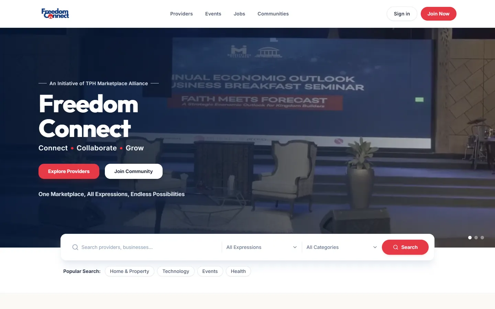
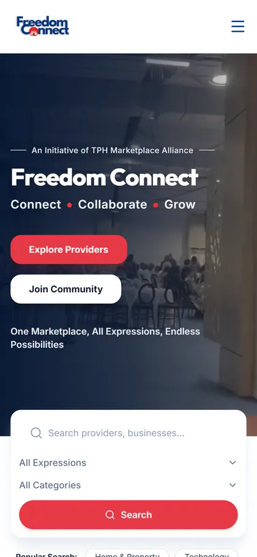
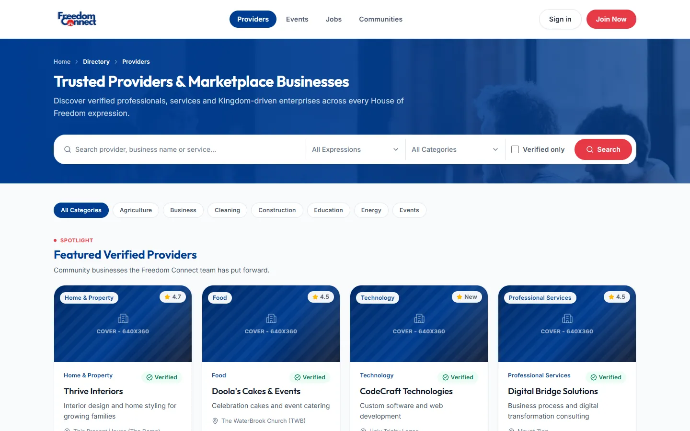
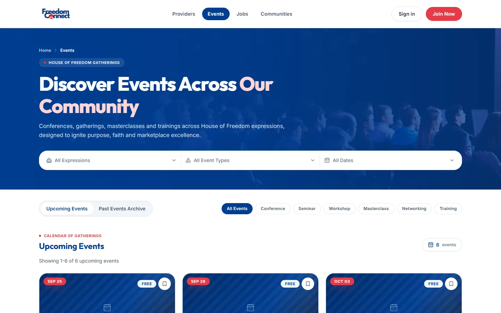
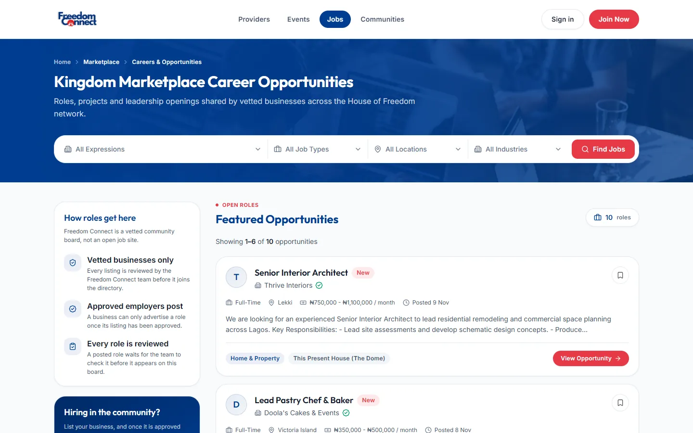

One trusted place for a community’s businesses, jobs and events.


Overview
Freedom Connect is the marketplace, jobs board, events hub and community network for the TPH Marketplace Alliance, a network of entrepreneurs, professionals and business leaders.
I built it for TechHub, from the database and its access rules to every public page and the admin area behind them.
A directory is only useful if people trust it.
Members wanted one place to find each other’s businesses, events and job openings. But an open directory fills up with listings nobody has checked, and once people stop trusting it, they stop using it.
So the hard part wasn’t the pages. It was deciding who can publish what, and who checks it first.
Three rules I built around.
- Checked before publicNew providers and job posts wait for an admin. Nothing goes live just because someone submitted it.
- Big edits get a second lookWhen a verified provider makes a major change, it goes back for review, and the approval is tied to the exact version the admin saw.
- Roles live in the databaseMembers, providers and admins are enforced by database rules, so a bug in a page can’t expose what a role shouldn’t see.
Four hubs, one standard of trust.
Find a provider you can trust
Search by name, expression and category, filter to verified providers only, and open a full profile with services, contact details and member reviews.

Events with registration built in
Conferences, seminars, masterclasses and networking events, filtered by type and date, with a registration form on each event.

Jobs from businesses the community knows
Only verified businesses can post roles, and every post is reviewed before it appears, which is explained right next to the listings.

An admin area for the people keeping it clean
Admins approve providers and jobs, manage events and communities, review pending changes and see an activity log of who did what.
Where it stands.
The full platform runs as a live demo with test accounts while the alliance prepares to launch.
Reflection
Moderation sounds like an admin feature, but it shaped the whole product: what a provider sees after submitting, what a member can trust, and what the database has to guarantee. Designing the review flow first made every page after it simpler.